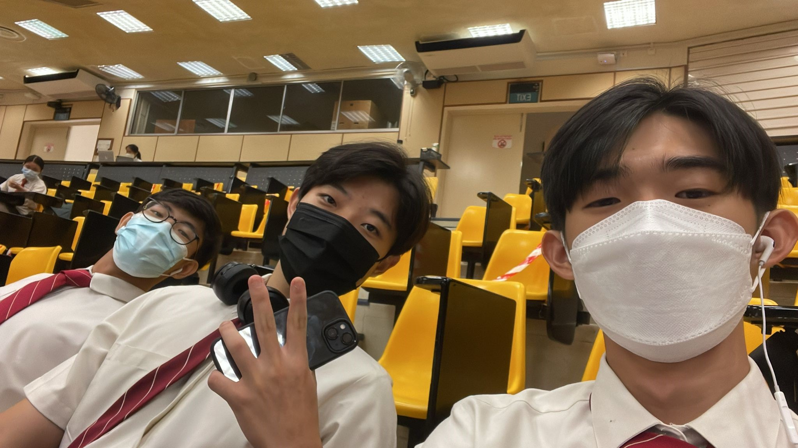
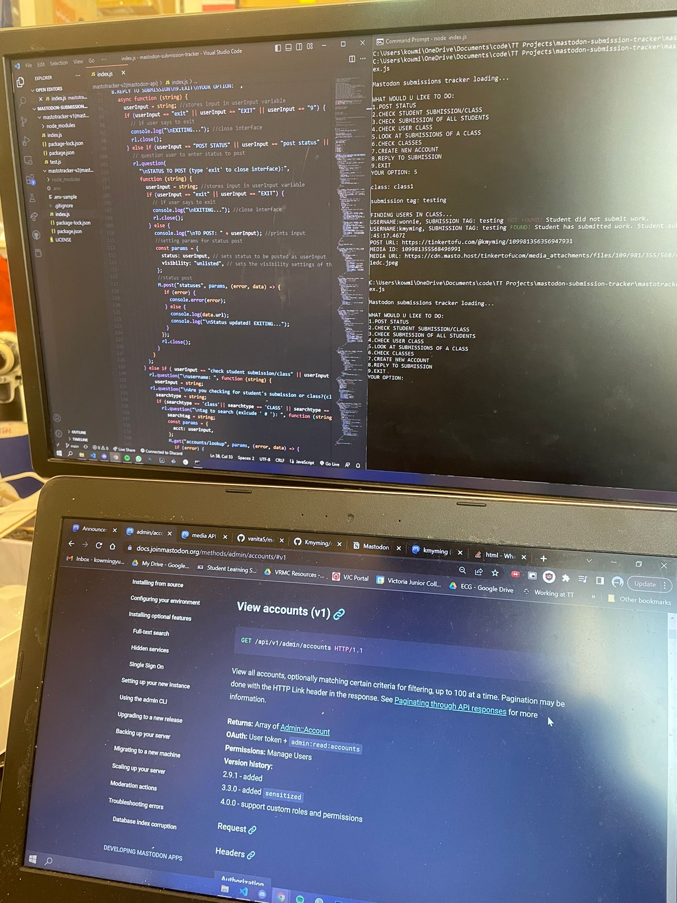

The ocean trash cleanup device is aimed at removing buoyant & surface trash. It works by using
a pressure gradient generated by a 9V water pump. This helps pull less dense objects into a
bin, for future disposal. It works as a stationary bin attached to harbours and piers or if possible,
can be used as attachments on boats.
This is a prototype built with recyclable materials.
Features:
Current drawing pump which pulls buoyant trash into the bin
Rotatable lid which allow for the opening and closing of the bin
LED screen displaying the status of the bin (Operational/Full)
Manual Control with two buttons
Button A: lid close
Button B: lid open
Bluetooth activated control with smartphone
MakeCode Project:
Parts:
Micro:bit V1
Grove Servo Motor
Grove Water Pump
Grove Relay
Micro:bit Breakout Board
Demostration:
Automated Lights and Attendance IoT System
Ever used Google Home to turn on the lights? Well... what if we made our own?
Introducing, the automated lights and attendance system! This IoT device detects entry and exit
through PIR sensors, logging the data onto the ThingSpeak IoT platform. A telegram message will thus be sent
to the user through IFTTT indicating whether a person has entered or left the room, and the total number of people in the room.
Features:
Automated lights
Automatically turn on when people enter the room
Attendance system
Able to record the number of people in the room at a specific time!
Able to record the number of people in the room at a specific time!
Can view the number of people in the room in real time!
Notifications when someone enters/leaves the room
Parts:
Octopus 5mm LED brick OBLED
2x AM412 PIR sensor*
Micro:bit V1*
IoT:bit breakout board*
OLED display*
*These parts can be found in the ELECFREAKS Micro:bit Smart Science IoT Kit.
MakeCode Project:
Demostration:
IoT Noise Monitoring Device
As a teacher, one would have to deal with high noise levels from noisy classes, and it can get tiring having to deal with such situations. Now, what if we had
a device do it for you? Thats where the IoT Noise Monitoring Device comes into play!
With this device, one can easily control noise levels in the classroom, with the alarm that rings when the noise level is too high. Real-time monitoring is also
available, with the data logged onto the ThingSpeak IoT platform and the current noise level displayed on the OLED screen. Telegram messages are also sent to the user when the noise level exceeds the threshold through the
usage of the IFTTT platform.
Features:
Monitor the noise levels in real time on ThingSpeak
Have an automatic melody played when it gets too noisy
Receive Telegram messages when it gets too noisy, in case you are ever away from the classroom
Parts:
Microbit V1
ELECFREAKS microbit Breakout Board
Noise Sensor*
OLED Display*
*These parts can be found in the ELECFREAKS Micro:bit Smart Science IoT Kit.
MakeCode Project:
Demostration:
PERSONAL WEBSITE
The making of my own personal website. Used HTML, Vanilla CSS and Vanilla JavaScript for this project.
This project is far from completion, and there will be many more updates as I continue to work on it.
For more updates and information, do check out my Github Page!
Updates:
4/1/2021: v1.0
Version 1 of the website completed! Content for 'about', 'my work' with some basic JavaScript
for automatic carousel, modals and navigation bar for mobile.
20/1/2021: v1.1
Minor edits to the website to make it run smoother and load quicker, through compressing and properly sizing images,
and eliminating render-blocking resources. Hopefully the website loads a tad bit faster now!
SAFMC 2022
I participated in SAFMC 2022 with my electronics spec, making it to the final round.
This project was one of the most tiring projects I have taken up,
but it left me with a sense of fufilment, and taught me many valuable life lessons that
helped me grow alot as a person.
I can't really showcase the entirety of the project in full over here, so this is
the link to
the project journal.
In terms of technical knowledge and skills required, it definitely wasn't the hardest project.
All we needed was basic aerodynamics and flight control knowledge, basic circuitry skills, and some
common sense. However, what was tough about this project was how we knew almost none of this when embarking on it.
That lack of knowledge meant that we did not make the best choices right from the start. For instance, without the basic aerodynamic knowledge,
we did not know how the different aircraft wing types and positions would affect the flight of our aircraft, and hence chose to model our plane
after the F-22, using diamond-like delta wings that meant that it was super maneuverable and hard to control.
We also did not have enough resources, lacking the funding to procure what we needed. Hence, alot of times we found ourselves
having to be resourceful and use what we had, and not waste a single bit of equipment and material to save costs.
Despite all the difficulties, I am still very proud of what we have achieved as a team. When we test flew our first prototype,
it flew for a solid 3 seconds. it definitely hurt seeing it crash so quickly despite all the hard work, but we did not let it affect us.
We continued working tirelessly on improving our prototype, identifying problems and developing solutions. Throughout the March holidays,
we came back to school every single day, working the whole day on the project while concurrently running the March Camp. We expanded the wings
to increase lift, added a vertical stabiliser, change the foam and wood used, improved on our aileron control and sensitivity, and strengtened our fueslage and wings using carbon rods.
We also faced the problem of the torque roll phenomenon, and had to readjust our ailerons to solve it.
To finally see our second prototype achieve stable flight, was the best feeling I ever had. The satisfaction seeing our hard work pay off and our ideas turned into reality
was second to none.
However, we hit a major roadblock on the day of the final round of the competition. We focused so much on building our aircraft that it was over the weight limit.
We previously had emailed them to ask what the consequence was for being over the weight limit, but due to some miscommunication,
wrong information was given to us. We were scrambling to shave off weight, and the barely made the limit. The end product however,
could be barely called a plane. Despite such a disapointing end result however, I am still immensely proud of how far we have come.
We entered the competition with no expectations, with the thought of building a working plane a dream, especially in a short timeline of
one month and a lack of experience, guidance and resources. Being able to actually construct a working plane and persevere till the final
round of the competition was something I am proud of, despite not emerging champions.
This project was definitely a big learning experience for me, allowing me to grow immensely as a person. First of all was obviously,
to always follow the rules. Granted that us exceeding the weight limit may not have been entirely our fault given the wrong information
provided to us, its better to be safe and sorry and to not exceed the limit in the first place.
Beyond that, this project has shown me how much a person can grow from being out of their comfort zone. There was not a single moment
during this competition that I was sure of what I was doing, and I was always trying something new. It taught me that for a person to grow rapidly,
they cannot be comfortable with what they are doing. If you are unsure and uncomfortable, they you are doing something right, and we should strive to be
comfortable with being uncomfortable. It also taught me how to learn. With our lack of knowledge in aircraft building, we had to learn how to find out what we needed to know on our own,
instead of having it spoonfed to us. It also trained my problem-solving skills alot. We constantly hit roadblocks in our building process,
and the road was never smooth sailing. I had to exercise my critical thinking skills to break down complex problems, and had to be innovative and creative in finding
solutions. It also honed my leadership skills, and taught me to be a more people-oriented leader. Given how much workload we had then, having to
juggle our studies, upcoming tests, this project, orientation, and normal CCA, it seriously drained us all and left us feeling demotivated sometimes. I realised that the people were the core of
this project and if I wanted to succeed, I had to focus on them, insetad of the project, making them feel validated for their efforts and prioritising their needs, whilst balancing with the
projet progress. It also seriously taught me how to manage projects and also my time. Given our tight schedules, I had to plan exactly the time allocated for this project
and also break the project down such that the milestones we set were attianable, with leeway for failure too.
Overall, this project was never about the end result, but about the experiences gained alot the way. It was a big part of my JC life, one that taught me many lessons
and grew me a lot as a person. However, I am still hungry for more. On my own, Ill definitely try to work on another fixed wing aircraft project,
learning from our failures and building a better aircraft.
SSEF 2022

Under the VJC Science Research Programme, my friends and I completed a research project that aimed to determine
the shortest travel time to Mars and the feasibility of such a interplanetary transfer using the FreeFlyer astrodynamics software.
With this project, we participated in SSEF 2022, emerging as a finalist, and also participated in the International Elementz Fair 2022.
You can access the final research paper we wrote here.
The project definitely was not an easy one. It was our first proper research project, and we faced many difficulites along the way.
Given our inexperience and lack of knowledge in the field, we had to read through countless research papers and learn the basics of interplanetary transfers,
and it took us quite some time to find a research topic that was viable. We also had to get acquainted with the FreeFlyer software,
learning how to conduct simulations, how to modify the code to output the data we required, and had to debug and find out why we were not getting
the data we needed. Writing the final paper was not an easy task either, as we had to learn how to break down complex ideas and how to present them clearly.
However, this project gave me a unique experience that I would never forget. It was my first proper venture into research, and through this project,
I felt that I could see myself working in this field in the future. School research is definitely not the same as actual industry or university research,
but I thought it was a good first step for me, and I hope to explore more into research in the future. I really enjoyed the entire process, from the brainstorming, to
the experimentation, journal writing, and oral defence. The oral defence especially, was quite interesting. It was harder than I thought, as I realised how difficult it can
be to communicate complex ideas in simpler terms, and it really tested my understanding and ability to break down such ideas to make it digestable. It also trained me how to
think logically and present ideas logically, as many things may seem logical to you but one may not actually communicate it well as they believe its logical to assume, hence
achieveing clarity in ideas is important.
When we first embarked on this project, we were not expecting much, just hoping to come up with a proper research project. We did not have as much guidance and resources
as compared to other teams, who had mentors from NUS, DSTA whatnot. However, we did whatever we could with what we have, and to be able to be a finalist for SSEF was quite shocking already.
In the future, I definitely hope to work on more of such projects, perhaps maybe even achieving an award in the future.
ROV SUBMARINE
This was first engineering project we embarked on as an Electronics specialisation, and definitely one to remember.
There were many firsts, and besides all the technical knowledge, it taught me alot about project management, and showed me
what working in engineering could be like.
For the full technical information about the project, you can refer to the journal here.
I got to learn alot of technical knowledge during the course of this project, working mainly on wireless control, programming the controller,
doing CAD design and 3D printing of motor holders, motor testing and waterproofing.
Since we were going to remotely control it, we had to work with wireless control, and hence used the ESP32 microcontroller and utilised WiFi control. I had to learn how to program using Arduino to
set up access points and connect the ESP32s to one another and sending HTTP requests. Things seemed ok at the start, but they became increasingly
complicated as we tried to send multiple datas at once. I also worked on the controllers , working on collecting the input values of the various controls
and sending over the data using the WiFi control. We also had to recalibrate the potentiometer values to remove certain errors in its output,
and hence utilised abit of PID control, mainly the 'Proportional' aspect.
The rest of my teammates worked on other aspects of the project, such as motor control, pressure sensing, and electromagnets for object pickup.
I also got to work on some of the mechanical aspects of the project. For example, we had to make the submarine heavier as it would not sink,
and hence utilised weights to do so. However, the placement was important to ensure the center of bouyancy was at the correct position. We also planned
to incoporate semi-automation features to the submarine, and hence wanted to use a small balloon to measure the hydrostatic pressure.
Another very interesting aspect of the project was the motors. It wasnt as simple as just choosing a random motor and attaching it to the robot.
We had to think through carefully what kind of specs we required in our motors, and how the torque, RPM, voltage and current affected our choice, and also
had to devise a method to test them, which was quite interesting. I really enjoyed how we were in a way bringing concepts out of the classroom, to work on actual
physics experiments beyond just practicals.
I also got to work on doing CAD design for the motor holders and 3D print them, which was my first time ever doing so. I realised how important being
precise and detailed is, as one wrong number and we would have to waste another hour or so reprinting the build. It was interesting learning about basic CAD design
and 3D printing, such as the various platics such as PLA and how the entire process from design to product was like.
Waterproofing the motors proved to be another challenge too, as we had to work with parrifin wax and vaseline. We had to seal the motors to ensure that wax does not enter the holes
while ensuring that the shaft could still spin. Working with melted wax was a challenge too, since it creates such a mess, and we had to preplan well accordingly and ensure our steps were precise.
Sadly, this project got discontinued before we managed to complete the final assembly of the submarine, as our teacher in charge wanted us to focus on other things. However, this project definitely
was a good learning experience for us, allowing us to experience what engineering was like, and it solidified my interest for engineering.
I interned at TinkerTanker twice, once in year 4 during the december holidays, and another time Post As before NS. I guess this write up will be
slightly unique in the sense that its not just what I learnt and experienced from both internships, but also comparing what I did and looking back at how much
I have grown.
When I was in year 4, I mainly worked on micro:bit curriculum development projects, basically taking apart kits and developing lessons and possible projects students
could make with the kits. I worked with the ELECFREAKS Smart CuteBot, Smart Science IoT Kit, and the Arduino MKR1000, and creating projects like the Automated Lights and Attendance IoT System and the IoT noise monitoring device.
At that time, I barely knew anything about programming and electronics, but these projects taught me so much, learning thing ssuch as basic coding principles, networks and requests, and soldering.
This time, I worked on more 'proper' company projects. Given my greater technical knowledge and experience after 2 years, I was tasked with DevOps projects, such as
creating a Google Add-on to help automate company proposal writing. I also worked on Project Mastodon, a project that aimed to use Mastodon as an alternative
learning platform for students, where they can post and view submissions with a Twitter-like experience, acting as a form of portfolio for them too.
I was tasked with creating a submissions tracker for the trainers in order to make the platform viable, and worked with Wonje to
interface with the API and create a webapp for the tracker. I also had to work on some discord integration with the Swift Acclerator class by
creating a discord bot, the class that was going to be the pilot for this project.

I also managed to work on a makers project. The company had recently accquired a contract to build massive charging cases for their Sphero BOLT kits,
and I had to help out in the production. It was quite interesting to see the entire production process, and how they broke down this massive project
into small parts to make it more manageable and the workflow to be more smooth, and was also able to learn from the design process behind the prototypes.
Both times, I definitely did some normal intern stuff too, like helping out for events and classes if they required any assistance.
What was consistent between both internships was that, I was never comfortable both times. I was always out of my comfort zone, even though I already knew so much more.
It made me realise how much a person can grow and learn by pushing themselves out of their comfort zone. It is never easy no matter how many times one may do it, but it is
definitely worth it when you look back and see how much you grow. I barely ever did micro:bit before coming to TinkerTanker in year 4, and neither did I ever
work with Google Apps Script, APIS, or even built a web application on my own before this second internship. But it was because I pushed myself to just dive head in to developing
these projects despite having very little knowledge or experience, was I able to learn and gain so much from it. It also taught me how to learn, in the sense that things these days
are all online and you can practically learn anything you want to, but what is difficult is asking the right questions and using the right resources. I found ChatGPT to be especially helpful with this,
and was thoroughly impressed with how well it was able to read and analyse my question, condense whatever information I need and even provide examples for me. It seriously assisted with my work
and helped me learn JavaScript on a deeper level, such as learning object-oriented programming, async functions and promises.
One thing to get used to was also the working life. I really enjoy the working life, especially since I am able to do things I can find meaning and passion in.
Working on Project Mastodon was extremely fufilling because I could really see the value in the project, and to see the project go towards being pilot tested with the
Swift Accelerator Class was quite mind-blowing, to see my work go beyond just us interns playing around, developing and testing, but to be actually used to solve a real-life problem
and improve the lives of others. I could really see the value of engineering from this, and I hope to work on more on such projects in the future.
Working in a start-up also was quite a unique experience. I took a student attachment at RealTek, and could really see the difference working in an MNC versus a start up.
Work in MNC was very structured, everyone has clear defined roles and work, whilst in a start up, things get thrown to you and you have to figure it out on your own and have free rein
on what kind of things you want to do and even how you want to plan your time. For our projects, YJ just told us the end goal we have to achieve, and we had to
figure everything else out on our own. Your role also becomes less defined, and you definitely will have to take up random side things to do too like help with packing, random testing, random research etc.
I also really liked how everyone there was so like-minded, in the sense where they were all passionate about engnineering and technology. They dont see this as a job, but a passion, and really hope to create value
for others whilst having fun and enjoying the process. It is nice to talk to like-minded people, bounce off ideas and grow from each other's experineces.
Overall, the internships were definitely a very fufilling learning experience for me, and was something I thoroughly enjoyed. It definitely strengthened my desire to pursue engineering in the future. :)
INTERNSHIPS
RealTek Internship
I got to participate in the MOE STEM Talent Internship 2022, where I went to RealTek Singapore for a 2 week attachment.
This attachment definitely opened my eyes to the work of electrical engineering and semiconductors, and was a very enriching and fruitful learning experience.
The first few days were quite boring, as it was mainly lectures about semiconductors, ICs, the history of programming and electronics, and basic verilog and logic gates.
It definitely broadened my perspective and allowed me to learn alot more about the history of modern technology and how it is evolved. We even got to see some very cool things,
such as one of the first transistors from Bell Labratories, olden day PCBs and cell phones, magnetic discs, and semiconductor wafers.
We also learnt about the semiconductor development process and how semiconductors work. It was interesting to see the application of physics in the making of such revolutionary products,
and to see things I learnt in H2 and H3 Physics being actually used for real like applications such as capacitors and inductors for time delays, was very interesting.
We learnt about Hardware Development Languages, the use of logic gates to create digital circuits that design IC chips.
We also got to work on a hands-on Verilog Project using the FPGA Basys Board. It was definitely very eye-opening to write HDL compared to conventional software code.
Despite its similarities, the way the logic flows can be slightly different, and you kind of realise how some intuitive things may not work the way you would think it normally does.
It definitely trained my logical thinking skills even more, having to think not just in terms of code, but in terms of digital signals, not just the HIGH and LOW, but also the propogation period,
and the use of different logic gates to create new logic gates. I really got to appreciate how electronics work, and how much complex logic is put into creating a product that we take for granted to be simple these days.
It was very interesting to see the difference between the logic of high-level programming languages, where it is more human-based, as compared to low-level languages,
where things are not as intuitive and you kind of have to learn to speak like a machine, which I had to adapt to.
I also got to talk to the embedded software development team for the RealTek ICs, where they explained to me their work and how they make the RealTek ICs compatabile with the Arduino IDE. It was very eye opening to learn
more about the workings behind electronics I have already been using regularly, and to truly understand the complexities behind the different steps I take to program the various boards made me appreciate how much more simplified things are already for us.
Overally, I am super grateful for this experience as it allowed me to see a different side of software and hardware beyond what I have ever learnt, going deeper
into its intricacies and truly understanding the workings behind modern technologies, and have also allowed me to experience what working as an electronics IC Design engineer will entail, if I choose to pursue this field in the future.